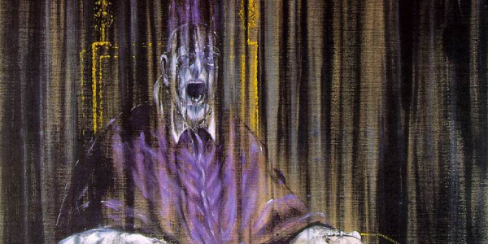

PSYCHOLOGICAL
El terror psicológico se centra en el miedo interno y las traumas psicológicos, explorando la mente humana en situaciones de estrés extremo.

Obra: Tres estudios para figuras en la base de una crucifixión
muestra seres distorsionados que transmiten angustia, violencia interior y horror psicológico.

Obra: El perro semihundido
refleja aislamiento, desesperación y vacío existencial en una de las imágenes más inquietantes de las Pinturas negras.

Obra: La noche estrellada
transmite una intensidad emocional turbulenta que muchos interpretan como reflejo de la mente agitada del artista.

Obra: Estudio del Papa Inocencio X
distorsiona la figura humana hasta convertirla en una expresión de grito, angustia y terror interior.